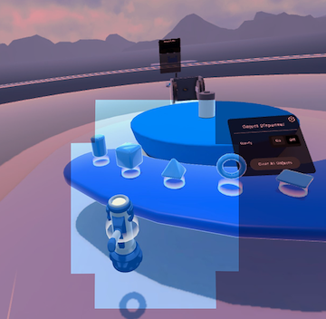

Foveated rendering is an optimization technique in which Unity renders the areas of the display at the periphery of the user’s vision at a lower resolution. Foveated rendering can improve rendering performance with little impact on perceived visual quality.
Unity varies the rendering resolution across the screen according to what the fovea of the eye perceives. XR devices support foveated rendering in one of two modes, depending on whether they track the user’s eyes. Some devices also support dynamic foveation, which varies the amount of foveation they apply while your application runs. XR platforms rasterize the lower-resolution regions with different techniques. The technique a platform uses determines the coordinate space of screen-space textures, and therefore whether your custom shaders need changes.
Foveated rendering gets its name from the fovea, which is a small part of the eye containing the densest group of photoreceptor nerves. The goal of foveated rendering is to vary the rendering resolution across the screen so that Unity renders only the part the fovea perceives at the highest resolution.

XR platforms implement foveated rendering with a variety of techniques, such as variable rate shading (VRS) and variable rate rasterization (VRR). The technique a platform uses changes how shaders sample textures when foveated rendering is active. To keep assets working on any platform, Unity provides shader macros, keywords, and preprocessor symbols. Use them to adapt shaders so that screen-space calculations produce correct results on all platforms. Refer to Adapt custom shaders for foveated rendering for information about how to use them. Shaders that Unity and the Universal Render Pipeline (URP) provide already use these macros.
XR devices can support foveated rendering in one of two modes:
With dynamic foveation, the device varies the amount of foveation it applies while your application runs, instead of applying a constant amount. The device increases foveation when GPU load rises, and reduces foveation when GPU load falls. The runtime determines this behavior, so the exact conditions vary by device.
Dynamic foveation changes what the foveated rendering level means. Without dynamic foveation, the device constantly applies the level you set. With dynamic foveation, that level becomes a maximum that the device stays within.
Two consequences follow from the level acting as a maximum:
Dynamic foveation is independent of the foveated rendering mode. It works with both fixed and gaze-based foveated rendering, and enabling eye tracking doesn’t enable dynamic foveation.
Dynamic foveation has narrower support than foveated rendering. Refer to Foveated rendering support reference for the conditions your project must meet.
Unity uses the term non-uniform raster for the space into which it rasterizes pixels on a platform that uses VRR. The term linear raster refers to the more conventional rasterization space with a regular grid.
The rasterization technique an XR platform uses determines the raster space of screen-space textures:
| Rasterization technique | Raster space | XR platforms |
|---|---|---|
| VRS | Linear | OpenXR and Meta Quest |
| VRR | Non-uniform | visionOS, when rendering with the Metal graphics API |
Shaders included with Unity already support both linear and non-uniform rasterization for foveated rendering. If you have custom shaders that perform screen-space calculations, you might need to update them to support foveated rendering on platforms that use a non-uniform raster technique.
The pixels Unity renders with a non-uniform raster no longer represent a regular grid. To work correctly with VRR, you must update any screen-space calculations that assume a regular grid.
For example, the left side of the following image shows a view of a scene rendered with VRR without correcting for the non-uniform rasterization. The right side shows the same view with the rasterization corrected:
Notice the compression on areas near the edges of the image on the left. This visual compression occurs because Unity rasterizes the peripheral areas of the texture at a lower pixel density. When you sample this texture, you need to use non-uniform UV coordinates, or convert linear UV coordinates to non-uniform with one of the foveated rendering shader functions.
The VRS technique changes the number of screen pixels that each fragment shader call shades, based on where a region is within the user’s field of view. VRS is compatible with existing shaders, so you don’t need to alter custom shaders to work under foveated rendering on XR platforms that use VRS.
The VRR technique adjusts rasterization so that the effective distance between neighboring pixels is no longer uniform. For example, Unity might render a peripheral region of the field of view to a lower-resolution texture, then stretch that texture when it composites the final display. Because rasterization is non-uniform, shaders that perform calculations in screen space can produce incorrect results under VRR if they assume that the rasterization uses a uniform grid. You might need to alter custom shaders to work under foveated rendering on XR platforms that use VRR.
A linear texture requires linear coordinates, and a non-uniform texture requires non-uniform coordinates.
All vertex attributes that pass from the vertex shader to the fragment (pixel) shader are in linear space, except for SV_POSITION. The SV_POSITION coordinates sample a non-uniform texture directly, but other vertex attributes require the appropriate linear-to-non-uniform remapping function. Similarly, sampling a linear texture with SV_POSITION requires the FoveatedRemapNonUniformToLinear function.
The coordinate space of a texture depends on how Unity or you create it. Most textures Unity creates, such as the depth buffer and G-buffers, are in the non-uniform space when rendering with VRR. Manually created screen-space textures, such as a UI overlay an artist draws, are typically linear and take linear UV coordinates.
Compute shaders are a further consideration. Source and destination textures can each be in linear or non-uniform space, and coordinates need remapping before the shader samples or writes to them. The source of UV coordinates matters too, along with how the compute shader calculates them. It also matters whether the functions you pass them to expect linear or non-uniform coordinates.